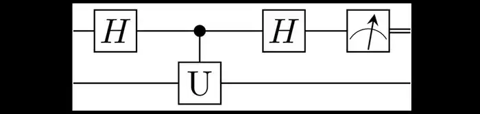
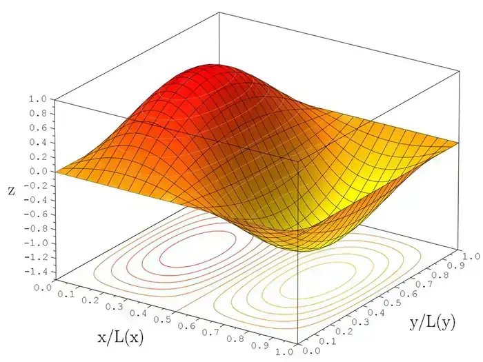
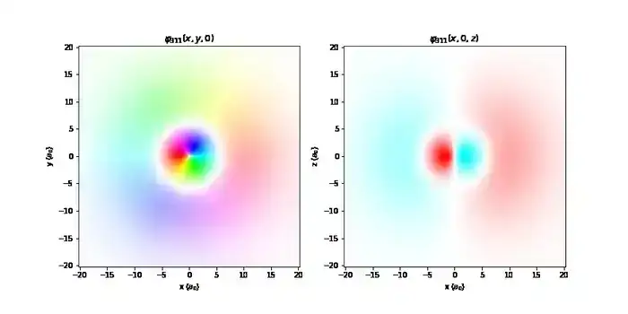

The measurement problem, stated plainly
Schrödinger's equation is smooth and deterministic. It spreads a particle's possibilities into a superposition. Then, at measurement, we are told to collapse the superposition to one outcome — a rule that appears nowhere in the equation and has no definition of 'measurement' attached.
Maps, diagrams and images






Copenhagen-style teaching says not to ask. Objective-collapse models say: add a term to the equation that makes superpositions of sufficiently large, sufficiently spread-out objects collapse spontaneously, at random, with a fixed rate.
The models
GRW (1986). Ghirardi, Rimini and Weber proposed that each particle has a tiny probability per second of its wavefunction spontaneously localising. For one particle the rate is so low it is never seen; for 10²³ particles acting together, collapse is effectively instantaneous.
Continuous models. Later versions (CSL) make the collapse a continuous stochastic process rather than discrete jumps, which handles identical particles and relativity better.
Diósi–Penrose. A different route: gravity itself causes collapse when a superposition of mass distributions becomes distinguishable by its own gravitational field. This makes the collapse rate mass-dependent, which is what experiments test.
Because collapse is a physical process, it adds a little noise and heat. Very small systems are protected by being small; the prediction is a threshold somewhere between molecular and visible scales.
Underground experiments at Gran Sasso, levitated optomechanics, and cryogenic cantilevers have all been used to rule out chunks of parameter space. So far the predictions of standard quantum mechanics keep winning, which pushes the collapse parameters into harder-to-reach territory — but has not closed them.
This is the rare foundations debate that could end with a measurement. That is why the archive treats it as live rather than philosophical.
Why it is in the archive
It is the clean counterexample to 'quantum theory means everything is uncertain until you look.' Here the uncertainty is real and physical, and looking has nothing to do with it.
See also pilot-wave theory, which keeps the wave and removes collapse entirely — the two proposals are opposite solutions to the same problem.
Sources for this page
- Wikipedia, “Objective-collapse theory” — GRW, CSL, Diósi–Penroseen.wikipedia.org
- Ghirardi, Rimini & Weber (1986), Physical Review D 34, 470doi.org
- Bassi et al. (2013), Reviews of Modern Physics 85, 471 — models and experimental testsdoi.org
- Donadi et al. (2021), Nature Physics — underground test of gravity-related collapsedoi.org
Open resources on this topic
- BookProbing Gravitational Cat States in Canonical Quantum Theory vs Objective Collapse Theories — Maaneli Derakhshani · 2016 (Internet Archive, free to read)
- PapersOpen-access articles: DOAJ · PubMed Central · Internet Archive Scholar
- BooksPublic-domain and borrowable copies: Open Library · Project Gutenberg · Google Books
Cite this page
Momin, S. (2026). Objective Collapse. The Larger World Archive. https://drsamonline.github.io/LARGE_GLOBE/objective-collapse.htmlMomin, Sohil. “Objective Collapse.” The Larger World Archive, 2026, https://drsamonline.github.io/LARGE_GLOBE/objective-collapse.html.Momin, Sohil. “Objective Collapse.” The Larger World Archive, 2026. https://drsamonline.github.io/LARGE_GLOBE/objective-collapse.html.@misc{objective2026objective,
author = {Momin, Sohil},
title = {Objective Collapse},
year = {2026},
howpublished = {The Larger World Archive},
url = {https://drsamonline.github.io/LARGE_GLOBE/objective-collapse.html},
note = {Last reviewed 20 November 2026}
}Last reviewed 20 November 2026 · Corrections policy · this page is not peer reviewed